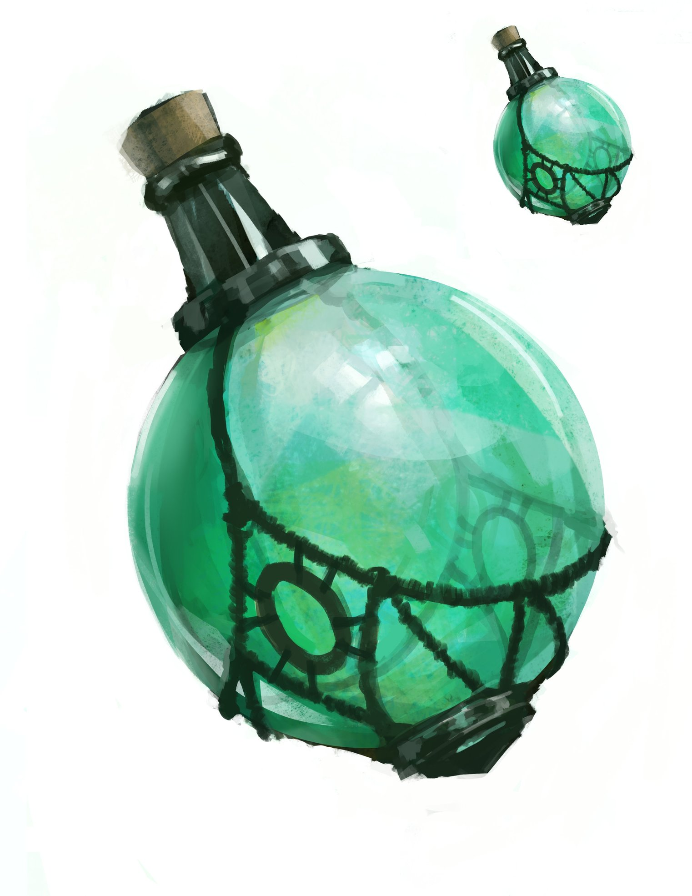

Potion of Invisiblity

Description
This potion's container looks empty but feels as though it holds liquid. When you drink it, you become invisible for 1 hour. Anything you wear or carry is invisible with you. The effect ends early if you attack or cast a spell.
| Attributes |
| Rarity: | Very Rare |
| Value: | 300 gp |
| Weight: | 0.5 lbs |
Ingredients
- 200 grams Distilled Water
- 30 grams Silverroot Extract
- 25 grams Bat Wing Extract
- 20 grams Dragon Orchid Petals
- 15 grams Chameleon Lichen Essence
- 10 grams Lunar Nectar
- 5 grams Powdered Moonstone
Instructions
- Step 1: Begin by carefully plucking 20 grams of Dragon Orchid petals. These petals should be dried and powdered using a mortar and pestle until a fine, vivid purple powder is achieved.
- Step 2: Extract the essence of Chameleon Lichen by steeping 15 grams in distilled spring water for several hours. This should produce a pale green liquid that changes color like the lichen itself.
- Step 3: Collect 10 grams of Lunar Nectar during the peak of a full moon. It should be gathered from moonlit flowers and then distilled into a clear, ethereal liquid.
- Step 4: Grind 5 grams of powdered Moonstone into a fine, sparkling dust using a mortar and pestle.
- Step 5: Carefully extract 25 grams of essence from the wings of bats known for their natural affinity with darkness and invisibility.
- Step 6: Create a strong infusion using 30 grams of Silverroot. Boil the roots in distilled spring water and strain to create a silvery liquid.
- Step 7: In a well-ventilated area, combine the Dragon Orchid powder, Chameleon Lichen essence, Lunar Nectar, and Moonstone dust in a cauldron. Stir gently, creating a shimmering mixture.
- Step 8: Slowly add the Bat Wing Extract to the cauldron. Be cautious, as this step is crucial for achieving true invisibility. Mix thoroughly to ensure uniform distribution.
- Step 9: Gradually pour the Silverroot infusion into the cauldron. Stir with care to achieve the final invisibility potion.
- Step 10: Transfer the invisibility potion into a vial, ensuring it's well-sealed to prevent evaporation.
Back to Main Page